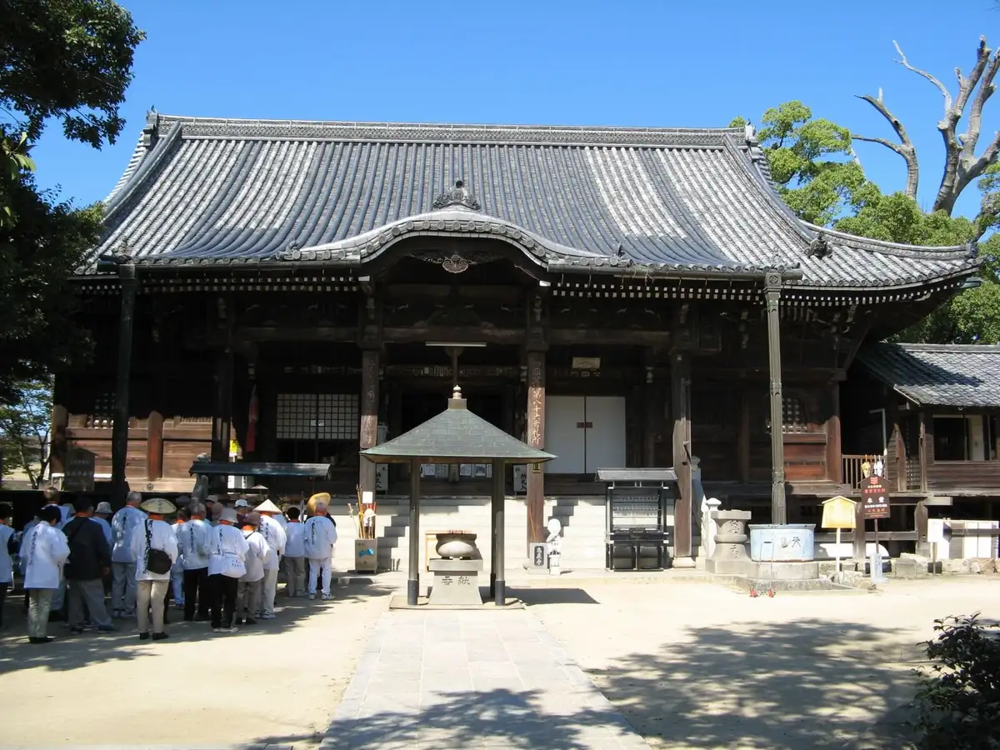
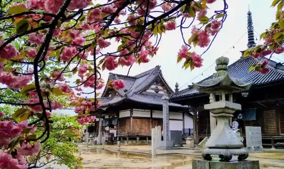
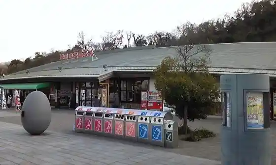
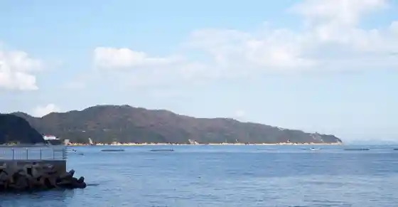

Sanuki
Sanuki · Kagawa
Sanuki
Highlighted on the Kagawa map.

Stay
Kusurishi Yu Onsen Ryokan Take Residence
Ryoshuku Nitta
Minshuku Kitayama Se no Shita So
Monperie Overuju
Ishiya Ryokan
Jako Maru Park Tsuda
OyadoEndo Koji no Niwa
Machi Yado AETE
1 to Kashi no Yado Endo
Beach SPA TSUDA 2&3 to
Beach SPA TSUDA (0 Cero to)
Beach SPA TSUDA (1 Uno to)
Marion Ya Shima Higashi 906 Go / Minpaku
Yado inn TEK-TEK
mimoro
Miroku Nature Park Campground
Guest House 3 Gokan
Guest House Berueru Ogata 1 Kai /2 Kai
Sanuki Michi A to Sanuki Michi B to
Suzune by 4S STAY
Guest House Berueru Ogata
Namioto by 4S STAY
Dining
Men Tokoro Maharo
Teuchi Udon Gennai
Men Di
Tame
Hane Ritsu
Yasohachi Iori
Mure Seimen
Ramen Yama Village Main Shop
Ra Men Labo Shichi Shi
Okawa Oashisu
Kaki Yaki
Shisen
Teuchi Udon
Kogane Seimen Tokoro Samukawa Mise
Matsubara Udon
Sushi Tokoro Kokomo Shido Mise
Onsen
Kusurishi Yu Onsen Ryokan Take Residence Public Bath
Jako Maru Park Tsuda Public Bath
Experience
Roadside Station Nagao
Sights
Shido Tera
Nagao Tera

Tsuda no Matsubara

Ogushi Peninsula

Shido Eki
Iwashimizu Shrine